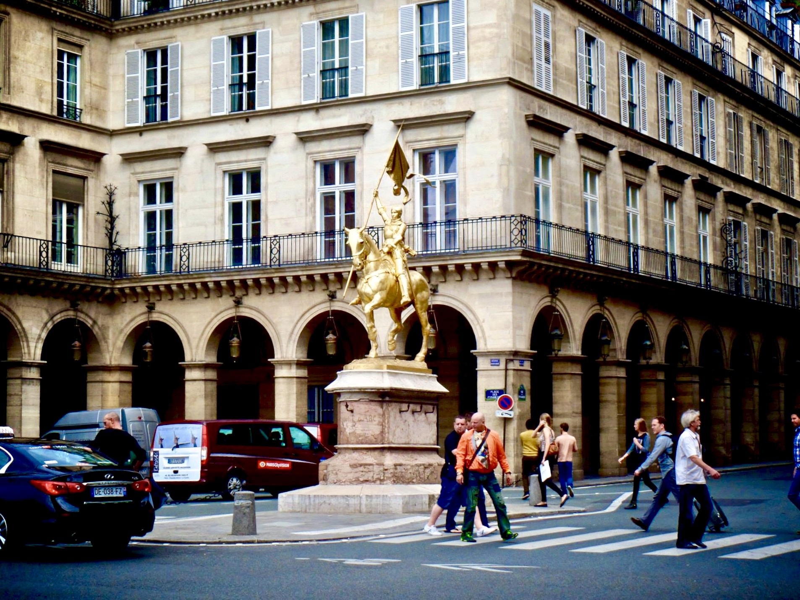
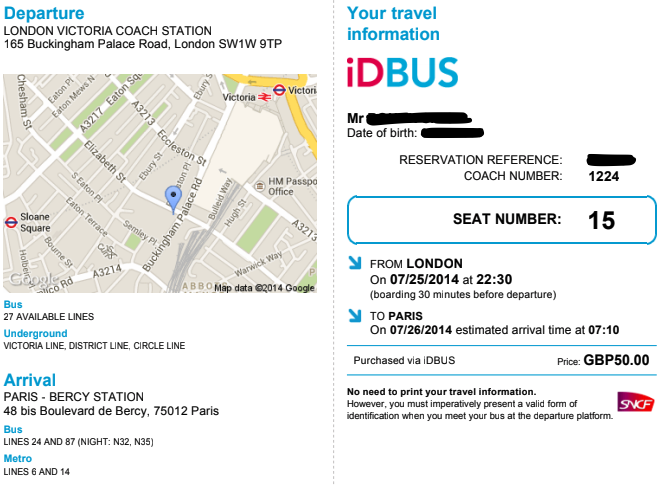
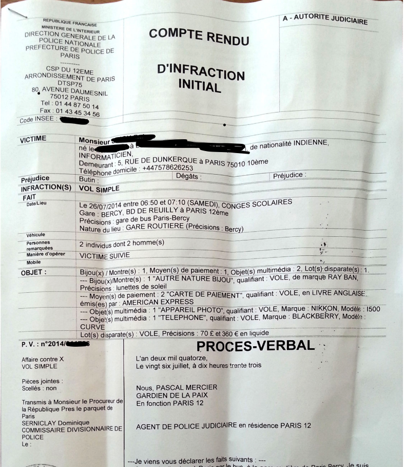

Robbed in Paris!
It was July 26th, 2014. I had recently moved to London for work. Living in London has its own perks for travelers. Mainland Europe is just a ride away. I applied for a Schengen visa and got ready to explore Europe. My first destination was, obviously, Paris. I was super excited to, finally, be in Paris after 24 whole years of being on earth. I took a £50 bus ride to Paris on a beautiful Friday night. My mind was racing about the endless things I had to do in Paris — Eiffel Tower, Monalisa, Notre-Dame de Paris, Palace of Versailles, Sacré-Cœur, walking on the Seine riverside, drinking coffee in a cute french café, and so much more! I reached Paris at around 7 AM — Got off the bus, took a map of the Réseau Express Régional(RER) Metro and started finding my way to my hostel.
And then it happened. What I did was, in the bus, I put all my stuff — wallet, passport, sunglasses and iPod into my camera bag. I was carrying cameras and lenses as I wanted to take the best pictures of my life in Paris. While I was checking out the metro map sitting on a chair with the camera bag in my lap at the Paris Bercy Bus station, a guy sitting behind me, tapped on my shoulder. I turned around — he spoke something in French and I said — oh! I can’t understand, only English, sorry! In the mean time, a guy walked in front of me and just took off with that camera bag of mine. When I finally turned around, my bag was gone! Everything — my passport, wallet, camera — all gone. I was hysterical. What can I do? I grabbed the guy who tapped my shoulder because now I knew why he did it. He said he doesn’t understand what I’m talking about — no English! Fuck!
After a minute or so, I realized what has happened. I was in a foreign country with a bag of clothes and a tripod (yeah! I was very prepared to take pictures). No identity, no money. I can’t eat or go back to London. It was my first time ever in mainland Europe. I tried finding any police or security personnel around me. No luck! Finally, I found a women who was dressed in a uniform and spoke english. I asked her if there is a police station nearby and she directed me to the Gare de Lyon train station.
Alright, I said to myself, we will work something out. I’ll go to an Indian embassy, get a passport, go to India, get a British visa and then come back to London. With all the thoughts in my mind about my immediate future, I reached the police station. They asked me a lot of questions in broken english and I explained everything to them. More than half an hour passed. The police said they can’t help me right now as the printer is not working so they cannot write a report. Really? They gave me directions to a bigger police station. Disappointed, I started walking. All the streets looked similar to me. I felt lost. I kept walking, thinking, at least, I’ll be in Paris for a few days until I get my passport. Then, I saw two guys walking behind me. I slowed down to let them pass. It was an early Saturday morning and the part of Paris, I was in, was deserted. After seeing them, I realized, holy shit! one of the guys was the one who tapped my shoulder at the bus station. I was filled with hope and fear. Are they following me? Will they kill me? I walked behind them until I saw some people around, near a market square. As soon as I was sure there were people and shops around, I ran up to them and grabbed one of the guys. They didn’t seem to be surprised. Anyways, I asked them to please return my passport and I was positive that they have it. The guy who accompanied the guy who tapped my shoulder was speaking excellent english. He told me that if I pay them €2000, they will find the child who stole my bag and get my passport. €2000, I did a quick math and realized I can go to India and get everything done for less than that amount. I told them, I’m a student and I do not have that kind of cash. I can pay €300 if they return my cards. They did not agree, but finally, after I almost broke into tears, asked me to wait there for 15 minutes until they get my passport.
Hope. I thought everything will be okay now and breathed a sigh of relief as I sat down in the stairs of the square. There were joggers and kids around me. I smiled at them as if nothing has happened. I walked into a bistro and asked if I can get some water for free as I have been robbed. The gentleman gave me a bottle of water and a croissant for free. I thanked him profusely and walked out. Half an hour passed. No one was here. 1 hour. 2 hours. My relief started to decay exponentially with every passing second. Eventually, I figured, they wouldn’t come and started walking towards the police station. I was crossing a park, right next to where I was waiting. A guy said in a hissed voice — “hey, come in here”. I walked inside the park. A sense of fear gripped me. There was no one around and the trees provided an isolation to this place. They were the same guys. One of them had my passport tucked into his trousers. I said can you give that to me, please? They said - pay us the money. I asked if they can give me my debit card, I can try to withdraw the cash. To my surprise, they gave me back my wallet minus the cash. Again, I was almost cheerful with my wallet in my hands. I asked them if there was an ATM nearby. One of the guys, walked with me to the ATM and stood behind me when we reached an ATM. He said in an unsettling tone — “try 1000”. I was afraid. I pinned 1000 and the screen showed a red cross. I told him, see I do not have that kind of money. Then, I tried 300 and it worked. I would later learn that Natwest Bank had a £300 limit on international withdrawals for my account. After giving him the cash, he walked me to a mom and pop store. The other guy, who had my passport, was waiting there. All this time, I had my phone with me. They demanded that I give them the phone. I said, please, you have everything — cash, camera, office phone, iPod, sunglasses and €300 on top of all that. I need my phone to go back to London. Finally, they said, take your passport, but DO NOT go to the police. I accepted, took the passport, and walked away without turning around.
By this time, I was not afraid of anything. I walked into some small streets and kept walking until I was sure they were not following me. Then I searched for a police station near me on the phone (I only had 200 MB of international data per day, so I wanted to use it carefully). I walked inside, and waited till I got to see an officer. The officer seemed to be patient and had a calm aura around himself. I explained my situation. He asked me if I had my passport? I said yes and then he said he can’t write an investigation report if I have my passport as I may be lying for insurance. I convinced him by mentioning all the places I interacted with those thieves and giving him a detailed description of every minute I spent in Paris. The officer now seemed convinced. He wrote the report.
All this, took over 8 hours. I was too tensed now to see Paris. I walked back to the bus station and booked a return ticket to London the same night. At the UK border protection, I was worried that they might have tempered my passport or something, but nothing happened! However, I was sitting with an American in the bus and he never came back from the security check! What a day! I reached London and met a friend who came to pick me up at the Victoria station. I finally felt happy and relaxed. It was all over. I got the money for the stolen stuff from my travel insurance. The bus company — SNCF, also reimbursed a couple hundred euros after I complained to them.
Later on, I visited Paris multiple times. I love the city and just consider my first visit as one hell of a story!